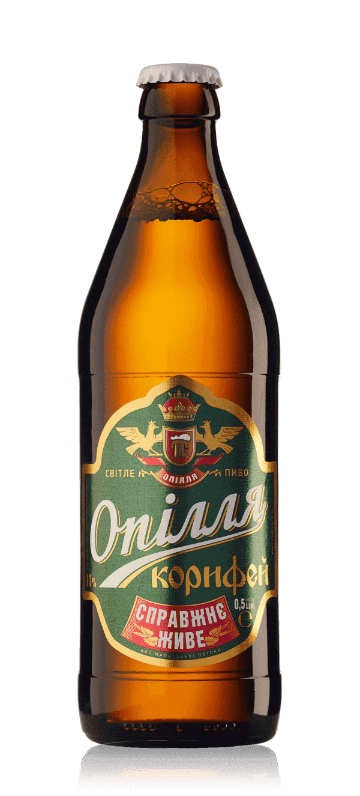
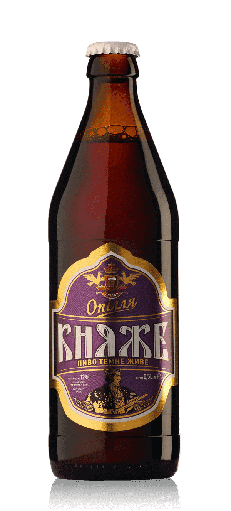
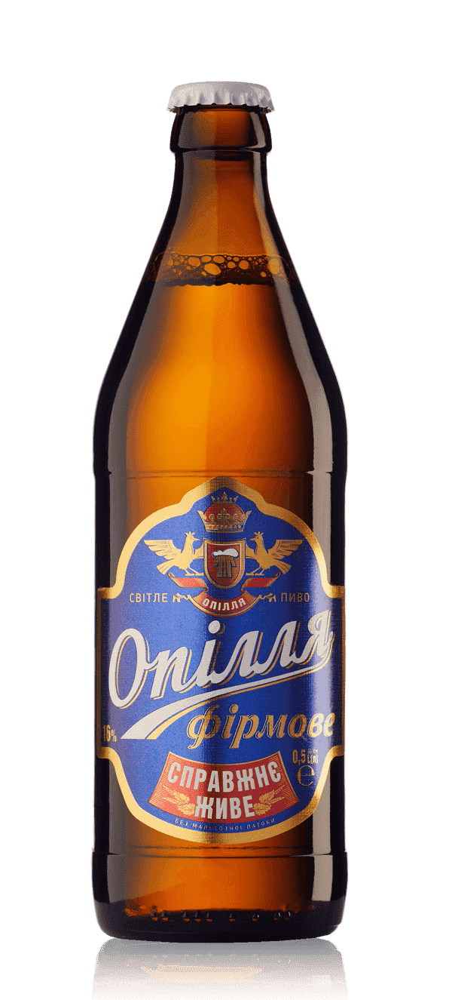

Корифей
"Корифей" це особливий сорт українського пива. Він поєднує у собі усі найкращі якості справжнього класичного пива Європи лагерного типу. Пиво «Опілля Корифей» має солодовий смак з помірною хмелевою гіркотою. Дарує приємний післясмак з нотками солодової солодинки. Це класичне пиво старої Європи зварене за традиційною рецептурою "Баварського пивного закону" 1516 року. Воно дарує чистий смак пива і тільки пива.
Світле
4,2% алкоголю


